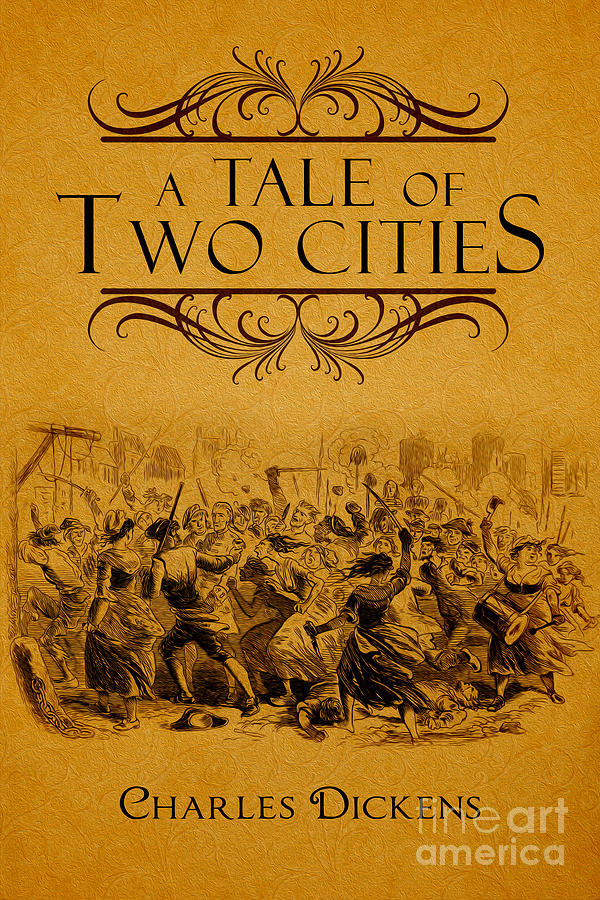

Delano Island
San Ramon, California (Jack)
I moved to San Ramon when I was a one year old from Chicago. I lived in a house on the north side of San Ramon until I was in eighth grade when we moved to south San Ramon right before high school started. Both houses provided me the opportunity to have easy access to San Ramon Golf Club, the place where my passion for golf started. I was able to go there every day and work on my game, and ultimately find the thing that I love doing. San Ramon also provided me with so many lifelong memories due to all of its landmarks and places to go.
Wilton, Connecticut (Jonny)
My story in Wilton began in the First Grade when my dad moved me and my family to Connecticut for his work. I was an outsider and knew no one. Soon enough it felt like home. I played every sport I could, this began my love for hockey and up until recently lacrosse. I used to have my own ice rink in my yard that I would build with my dad on New Years Day and I would spend every possible day skating and practicing. It was my happy place. I have many of my fondest memories jumping my ATV in the snow, going out on my homemade boat at the local pond, getting to play hockey during the halftime of the highschool rivalry game.
King Lear

A Tale of Two Cities (Jack)
My sophomore year in Honors English 2 with Mr. Pelster we read A Tale of Two Cities by Charles Dickens. At first I did not like the book because the language made it hard to follow and the subject matter did not interest me. Although by the time I finished the story, my perspective totally changed. I learned to appreciate Dickens’s writing style and his slightly different language. At first, there appeared to be many different storylines and I had trouble following all of the different characters, but by the end everything came to fruition in a beautiful way and I was left amazed at how amazing the story is. I also noticed an incredible amount of parallels between the book and the movie The Dark Knight Rises with Christian Bale. Upon more research, I learned that the movie followed a similar storyline as the book and went as far as naming an unjust lawyer who takes the credit for things he did not do as Stryver, just as the book. The characters in the book such as Madame Defarge, Sydney Carton, and Lucie Manette all come to fruition at the end and Dickens masterfully puts their lives on display.x
Moby Dick (Jonny)
I have always enjoyed reading, it came easy, but never in my life did I expect to read a book as complex and challenging as Herman Melville's Moby Dick. Last year, in AP Language and Composition, I faced the holy grail of all books and getting through it was a milestone in my reading career. Though there were many moving parts of the novel, there were a few elements that were seen pervasively. Melville used imagery of sharks illustrate his thoughts on the nature of people and the ocean, whales especially, to develop the idea of understanding the unavoidable truths of life. All that I had known of books to be, Moby Dick is ten fold higher level of reading and comprehension. I had to rise up to the occasion and was able to understand part of the novel.
Costumes
Golf Jersey (Jack)
When putting on the De La Salle golf uniform my freshman year, I felt nervous because I did not want to let my teammates down. Golf had always been an individual sport, but now I am not just playing for myself my whole mentality changed. While preparing for rounds I had to strategize differently than I would have in my individual tournaments. While wearing the DLS uniform we are taught to only make calculated risks, another way of saying do not mess it up for the team. In individual golf, you are the only decision maker, while in team golf knowing that one shot could determine a win or a loss for the team really changes your mentality. Putting on the DLS uniform taught me lessons I would have never learned and it prepared me for my near future in collegiate golf.
Hockey Jersey (Jonny)
I am going on with my tenth winter of hockey. It has been my greatest outlet for all these years through moves and other events in my life. I picked up a stick when I was in first grade, and began playing in second. Hockey has also defined who am through the friends I’ve met because of it and the time I’ve spent playing. When I put on my hockey jersey, I have my name on my back and my team/school on the front. This stands for something bigger than me, I am representing my family and my school. For this reason, I proudly wear my jersey to all of the football games and other DLS sports games that I attend.
That is why I truly believe it when I say, “THANK GOD ALMIGHTY, I’M A SPARTAN! HOORAH!”
Tabloids and Photographs
Snapchat (Jack)
The main platform of social media that I use is Snapchat. It provides me a way to connect with my friends, and also archive memories that I want to keep. There is a cool feature that if you save a photo on Snapchat, next year on that day it will say “Memory from one year ago” and you can see what you were doing that day. Seeing those bring back so many memories and reminds me of what I have done. Another reason I like it is that I can see what my close friends are doing. I would not say I am living vicariously through others because I am still living my life, but just also checking in on theirs. Whether we live in the past, present, or future is independent of each person. I personally tend to live in the future and I am always preparing for what is next, but Kairos taught me how to live in the present and I am working on living in the present at all times.
Instagram (Jonny)
Just about every high school student I know uses Instagram, including myself. It connects me with people I otherwise would have no contact with. This includes people that I used to be friends with in Connecticut and other people I have met on different occurrences and events. Instagram allows me to see what others are up to and show others the same. It documents what everyone does and lives and shows the highlights of what many people want their followers to see. Some people decide to show more others decide to show less, and some try to show false realities of what they want people to see. I use my Instagram to attempt to show highlights, what makes me happy, and lastly those that I appreciate. The past is the only way that people live in using it.
Traveling Symphony
Golf Team (Jack)
The De La Salle golf team provided me with the widely advertised “brotherhood” that everyone talks about. As a freshman, I made the varsity team so I did not know any of the upperclassmen that I was going to be with for the next five months. They all were so accepting and took me under their wing and I learned so much about what the DLS brotherhood is all about. My sophomore year, there were no seniors on the team so it was just me, four juniors, and a freshman on varsity. We all became so close, and this bond carried us into my junior year where we had an extremely successful year on the golf course. This year since those four seniors left, I thought that the season would not be as fun since I lost most of my friends going to college. Although, this gave me the opportunity to get to know the younger guys on the team more and become the welcoming senior that I once had my freshman year.

Hockey Team (Jonny)
Hockey is where I found my place at De La Salle. I joined the team as one of the worst freshman and someone who had never played anything other than local hockey. All of the other guys on the team for the most part not only had been playing for years but also had been playing at a much higher level than me. As time passed, I got better and proved myself to be a vital member of the team. I did this by showing up to every practice and not missing a single game. Last year, I was a starting defenseman and named the assistant captain. I would never have made it to that point if the competition between me and the other guys on the team did not exist. We became better because of each other. They turned from peers to teammates that I had shared blood, sweat, and tears with-which only brought us closer. Our season last year was the best season that anyone in the history of the team had had, not only because of the talent but because of the comradery of the team.
Paperweight
Kairos Necklace (Jonny & Jack)
Jack
Before going on Kairos, I saw how it affected so many of my friends and turned their lives around, but I did not think that I needed any help. The first day, everyone was going really in-depth with their life, but I felt that I did not have any heartbreaking stories to share so I felt out of place. By cookie night, my whole retreat experience changed. I learned how loved I am by my peers and how I make an impact on other people’s lives. Kairos taught me a new definition of brotherhood that I had not felt from either the golf team or my friends at school. It taught me how speaking about your life, both the good and the bad is therapeutic not only to you but also the listeners. I learned so many different perspectives on life, and without Kairos would not be the more well-rounded person I am today.
Jonny
Kairos has done so much for me in regard to all the relationships in my life. While I was there, I connected with God for the first time, truly, since middle school. This connection made the retreat for me. It also motivated me to put my whole honest self into the retreat. After I got home I have been a much happier person since experiencing Kairos, which has helped me with my friends. Before Kairos, I was at a very low point and the people around me were receiving the negative effects of this. Since I have been happier, my friends have noticed and have wanted to hang out more. This whole thing really has shown me the power that Kairos had on my life. Part of the reason that I wasn’t at a good point in my life was that I was feeling out of place and Kairos has provided me with a group of people that I know I can rely on no matter what. The Kairos necklace is a consistent reminder of the change that the retreat had on me and to Live the Fourth.
Comics

Norcal Championship Ring (Jack)
My junior year, our golf team had an amazing season. We won EBAL, came in second in NCS, then we went to the NorCal championship in Lodi. We all started off poorly, but we all played well on the back nine. I was in the last group of the tournament, so all of my teammates had already finished their rounds by the time I was on the last hole, and it was extremely close. Before I started the hole, my coach told me that I had to make an eagle (really hard to make) on the hole and we would win the whole championship or a birdie to tie and go into a playoff. It was a par five, and after two shots I was just over the green, back by where over two hundred people were standing, watching us finish, including my teammates. If I chipped it into the hole, we would win. I was pretty nervous with everyone watching, but I hit the chip exactly how I wanted and it went in the hole! That feeling that I felt was like nothing I had ever felt before and my teammates all rushed over to me and congratulated me because we won. After that, we all got a ring to remember our fond memories of that year, and to celebrate being the #1 team in Northern California.
DLS Brothers (Jonny)
After I leave De La Salle the thing that I will miss the most is the brothers that I have made. This year has been a break out year for me. Through Kairos, being part of 12th Man, Ven a Ver, and lastly being a DLS athlete, I have branched out and gained an amazing group of people that I can trust and rely on like family. As one would expect there are ups and downs in every family, but when push comes to shove, family is always there. I know that I will not find any better people than the ones who I have met during my time at De La Salle. This school has provided me with a priceless gift in the form of brotherhood. This is the scariest part about my departure from high school, but once a Spartan, always a Spartan, there will always be people that I can rely on no matter where I end up.